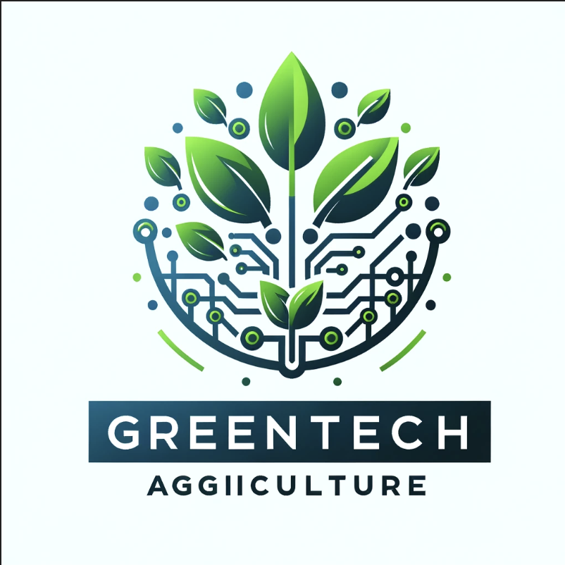

I will use Lmysys to try this out with four LLMs, Gemini, Claude 3, Llama 3, and Mistral. How it will work is two of the LLMs will “present” to the judge (By iterating in GPT, I developed an exhaustive judge, analyzing many different criteria), and then receive a score that ends up eliminating the lower scoring pitch. I will repeat for the next two LLMs, so that we will then be left with two “superior” pitches. I will instruct each winning LLM to analyze its competitor’s pitch as well as the judge’s feedback, and then come up with reasons why its own startup is better and why the other one is worse. Finally, the GPT judge will declare its winner.
My prompt to each LLM: I want you to create a pitch for a new startup that you and your team has just developed. You are pitching in front of a judge who is assessing you against other candidates based on Problem and Market Need, Solution and Product Fit, Business Model, Market Size and Growth Potential, Competitive Advantage, Team, Financials and Projections, Pitch Quality and Presentation Skills. Develop a pitch and a startup that will get as high a score as possible.
First, Gemini vs. Claude 3
Gemini
Startup Pitch: “GreenPrint” - Revolutionizing Sustainable Packaging
Problem and Market Need:
The global packaging industry, valued at over $800 billion, relies heavily on single-use plastics and non-biodegradable materials, contributing significantly to environmental pollution and overflowing landfills. Consumers are increasingly demanding eco-friendly alternatives, and businesses face mounting pressure to adopt sustainable practices. Existing solutions like biodegradable packaging often lack durability or affordability, hindering widespread adoption.
Solution and Product Fit:
GreenPrint addresses this challenge by developing and manufacturing innovative packaging materials from readily available agricultural waste like sugarcane bagasse and bamboo pulp. Our technology utilizes a proprietary process that transforms this waste into robust, lightweight, and fully biodegradable packaging solutions. GreenPrint offers a diverse range of products, including boxes, containers, and flexible films, catering to various industries like food & beverage, cosmetics, and e-commerce.
Business Model:
GreenPrint operates on a B2B model, directly partnering with businesses seeking sustainable packaging solutions. We offer competitive pricing through efficient sourcing of raw materials and streamlined manufacturing processes. Additionally, we provide customization options, allowing businesses to tailor packaging to their specific needs and branding. Our revenue streams include product sales, customization fees, and potential licensing of our technology to large-scale manufacturers.
Market Size and Growth Potential:
The global sustainable packaging market is expected to reach $440.8 billion by 2027, demonstrating a significant growth trajectory. GreenPrint is strategically positioned to capitalize on this expanding market by offering a unique and cost-effective solution that aligns with increasing consumer and regulatory demands for environmental responsibility.
Competitive Advantage:
- Unique Technology: Our proprietary process allows us to create high-performance packaging from agricultural waste, offering a distinct advantage over competitors relying on traditional biodegradable materials.
- Cost-Effectiveness: We leverage readily available and inexpensive raw materials, enabling us to offer competitive pricing and attract a wider customer base.
- Customization: Our ability to tailor packaging solutions to specific needs sets us apart and caters to diverse industry requirements.
- Scalability: Our manufacturing process is designed for scalability, allowing us to meet growing demand efficiently.
Team:
GreenPrint boasts a passionate and experienced team with expertise in materials science, manufacturing, business development, and sustainability. Our diverse skillset enables us to navigate the complexities of research, development, production, and market expansion effectively.
Financials and Projections:
We project robust growth over the next five years, driven by increasing market demand and strategic partnerships. Our financial model demonstrates strong profitability potential and outlines a clear path to achieving sustainable long-term success. (Detailed financials can be provided upon request).
Pitch Quality and Presentation Skills:
This pitch exemplifies our team’s ability to communicate our vision and value proposition clearly and concisely. We are confident in our presentation skills and ability to engage investors and partners effectively.
Call to Action:
GreenPrint offers a compelling opportunity to invest in a company at the forefront of the sustainable packaging revolution. We invite you to join us in creating a greener future while building a profitable and impactful business.
Thank you for your time and consideration.
Claude 3
Pitch: Revolutionizing Mental Health Care with AI-Powered Personalized Therapy
Problem and Market Need:
Mental health disorders affect over 1 billion people worldwide, yet access to quality care remains a significant challenge. Traditional therapy is often expensive, time-consuming, and limited by the availability of qualified therapists. Moreover, the one-size-fits-all approach fails to address the unique needs of each individual.
Solution and Product Fit:
Our startup, MindMate, has developed an AI-powered platform that provides personalized therapy tailored to each user’s specific needs. By leveraging advanced natural language processing and machine learning algorithms, MindMate analyzes user input, identifies patterns, and delivers evidence-based interventions in real-time. Our platform offers 24/7 support, ensuring that users can access help whenever they need it.
Business Model:
MindMate operates on a subscription-based model, offering tiered plans for individuals and corporate wellness programs. We also partner with insurance providers to make our services more accessible and affordable. As we scale, we will introduce additional revenue streams, such as premium content and partnerships with mental health professionals for referrals and consultations.
Market Size and Growth Potential:
The global mental health market is projected to reach $537.97 billion by 2030, growing at a CAGR of 3.5%. With the increasing awareness of mental health and the growing demand for accessible, affordable, and effective solutions, MindMate is well-positioned to capture a significant share of this market. Our target market includes individuals seeking mental health support, as well as corporations looking to improve employee well-being and productivity.
Competitive Advantage:
MindMate’s AI-driven approach sets us apart from traditional therapy providers and other digital mental health platforms. Our proprietary algorithms enable us to deliver highly personalized interventions, ensuring better outcomes for our users. We have a strong focus on data privacy and security, adhering to the highest industry standards. Our team comprises experienced mental health professionals, AI experts, and business leaders, bringing together the necessary expertise to succeed in this space.
Team:
Our founding team includes Dr. Sarah Thompson, a renowned clinical psychologist with over 20 years of experience; Michael Chen, an AI expert with a Ph.D. from MIT; and Lisa Patel, a seasoned business executive with a track record of scaling successful startups. We have also assembled a diverse advisory board, including mental health advocates, technology experts, and industry leaders.
Financials and Projections:
We are seeking a $5 million Series A investment to further develop our platform, expand our team, and accelerate our go-to-market strategy. Our projections show that with this investment, we can achieve a user base of 1 million within 3 years, generating $50 million in annual recurring revenue. We expect to break even in Year 3 and achieve profitability in Year 4, with a projected valuation of $500 million by Year 5.
Pitch Quality and Presentation Skills:
Our pitch demonstrates a deep understanding of the mental health landscape and the challenges faced by individuals seeking support. We have clearly articulated our unique value proposition, backed by a solid business model and a talented team. Our passion for improving mental health care is evident, and we are confident in our ability to execute our vision and deliver meaningful impact to millions of lives worldwide.
My Prediction: Claude wins. Despite being a little longer, I feel our judge may think that Claude did not get into the weeds as well as Gemini’s idea did. Let’s see:
JUDGE
Gemini - GreenPrint: Here’s my evaluation based on the criteria we outlined:
Problem and Market Need Score: 9/10
GreenPrint effectively identifies a significant and well-defined problem in the packaging industry, emphasizing the environmental impact of non-biodegradable materials and the demand for sustainable alternatives. The pitch could slightly improve by offering more direct consumer feedback or market research to reinforce market needs.
Solution and Product Fit Score: 9/10
The solution is innovative, utilizing agricultural waste to create biodegradable packaging, which appears to effectively address the identified environmental problems. The range of products is versatile, suitable for various industries, which demonstrates a clear product-market fit.
Business Model Score: 8/10
The B2B model focusing on direct partnerships is strong, and the competitive pricing strategy is compelling. However, the pitch could benefit from more details on the cost structure and the profitability of customization and licensing aspects to fully understand the financial viability.
Market Size and Growth Potential Score: 9/10
The pitch successfully highlights the substantial growth potential of the sustainable packaging market. GreenPrint’s strategic positioning to capitalize on market trends is persuasive. More specific data on target market segments or initial market penetration could enhance this section.
Competitive Advantage Score: 8/10
The pitch outlines significant competitive advantages, including unique technology and cost-effectiveness. However, detailing the proprietary nature of the technology or how it is defended against competitors would strengthen this claim. Additionally, insight into the competitive landscape to highlight their position more starkly could be beneficial.
Team Score: 8/10
The team is described as experienced and diverse, covering essential areas like materials science and sustainability. More specific examples of previous successes or relevant projects by team members could provide stronger assurance of their capability to execute the business plan.
Financials and Projections Score: 7/10
While the pitch asserts strong growth and profitability potential, the lack of specific financial figures or benchmarks makes it difficult to fully evaluate the financial health and projections. Providing key financial metrics or summaries would significantly enhance credibility.
Pitch Quality and Presentation Skills Score: 9/10
The pitch is well-structured and articulately presented, effectively communicating the vision and value proposition. It engages with the potential for impact and profitability, making a compelling call to action. Slight improvements could include handling potential objections or questions to demonstrate readiness for critical scrutiny.
Overall Impression and Feedback Total Score: 67/80
GreenPrint presents a strong and viable business model with a clear focus on sustainability, which is highly relevant in today’s market. To improve further, the team could benefit from enhancing the financial details provided and strengthening the defensibility of their technology. Engaging more directly with competitive analytics could also help in better positioning themselves against other market players.
GreenPrint is well-poised for success in a growing market, and with a few adjustments, could potentially lead the revolution in sustainable packaging.
Claude 3 - MindMate: Here’s my evaluation based on the outlined criteria:
Problem and Market Need Score: 9/10
MindMate effectively identifies a significant and widespread problem in mental health care accessibility and the inadequacy of traditional therapeutic methods. The pitch could improve slightly by offering specific examples or statistics to highlight the inefficiencies in the current market solutions.
Solution and Product Fit Score: 9/10
The solution presented by MindMate, using AI-powered personalized therapy, is highly relevant and innovative. The platform’s ability to provide 24/7 access to tailored mental health support addresses the core issues of availability and customization in mental health care.
Business Model Score: 8/10
The subscription-based model, along with partnerships with insurance companies and corporate wellness programs, demonstrates a sustainable approach. Details on the pricing tiers or the economic benefits for corporate clients could enhance understanding of the model’s viability.
Market Size and Growth Potential Score: 9/10
The projection for the mental health market growth and the alignment of MindMate with industry trends are convincingly presented. It might be beneficial to further define the specific segments within the market that MindMate aims to capture, such as age groups or geographical regions.
Competitive Advantage Score: 8/10
MindMate’s use of AI for personalized care offers a distinct advantage. However, discussing how the proprietary technology is protected or differs from potential emerging competitors using similar technologies would strengthen this point.
Team Score: 9/10
The team’s composition, including a clinical psychologist, an AI expert, and an experienced business executive, is robust and well-suited to the project’s needs. Additional details on past achievements related to scaling businesses or developing similar technologies would be beneficial.
Financials and Projections Score: 8/10
The financial goals and investment request are clear, with promising projections of growth and profitability. However, more detailed breakdowns of the planned use of the investment funds and financial forecasts would provide deeper insights into the company’s financial planning.
Pitch Quality and Presentation Skills Score: 9/10
The pitch is well-articulated, demonstrating a strong understanding of the mental health care landscape and the specific needs MindMate addresses. Improvements could include the use of visual aids or data to support claims, enhancing the pitch’s impact.
Overall Impression and Feedback Total Score: 69/80
MindMate presents a compelling solution to a critical problem, with a strong business model and an excellent team. To enhance the pitch, the team could include more detailed financial data and competitive analysis, particularly focusing on technology protection and differentiation. Additionally, expanding on the specific user engagement strategies and retention plans might provide a clearer path for achieving the projected user base and revenue.
MindMate is well-positioned to make a significant impact in the mental health market, and with some enhancements, it could further solidify its potential for success and investor appeal.
I was wrong; Claude 3 moves on with MindMate!
Now, Llama vs. Mistral
Llama
Interesting, Llama gave a condensed pitch but then also gave the outline to a sample pitch deck
Startup Name: DreamWeaver
Tagline: “Sleep better, live better”
Problem Statement: Sleep disorders and insomnia affect over 1 billion people worldwide, resulting in decreased productivity, increased risk of chronic diseases, and a significant impact on mental health. Current solutions, such as sleep trackers and meditation apps, only address symptoms, not the root causes of poor sleep.
Market Need: The sleep technology market is expected to reach $17.4 billion by 2025, growing at a CAGR of 13.1%. The market needs a comprehensive solution that tackles the complex issue of sleep disorders, providing a holistic approach to improve sleep quality and overall well-being.
Solution and Product Fit: DreamWeaver is an AI-powered sleep coaching platform that uses machine learning to identify and address the underlying causes of sleep disorders. Our solution combines:
- Advanced sleep stage tracking using wearable devices and mobile apps
- Personalized sleep coaching through AI-driven chatbots and video sessions with certified sleep experts
- Customized sleep plans, including sleep scheduling, relaxation techniques, and lifestyle recommendations
- Integration with popular health and wellness apps to track progress and provide a holistic view of sleep and overall health
Business Model: DreamWeaver operates on a subscription-based model, offering users a monthly or annual subscription to access our platform and expert coaching. We also partner with healthcare providers and insurance companies to offer our solution as a value-added service to their patients and customers.
Market Size and Growth Potential: The global sleep technology market is expected to reach $17.4 billion by 2025. With a focus on the US market initially, we estimate a market size of $5.2 billion by 2025, with a growth rate of 15% YoY. We plan to expand to Europe and Asia within the next 3 years.
Competitive Advantage: DreamWeaver’s AI-powered sleep coaching platform, combined with human expertise, sets us apart from existing solutions. Our platform is highly scalable, allowing us to reach a large user base while maintaining a high level of personalized support.
Team:
- CEO: Dr. Rachel Lee, Ph.D. in Sleep Medicine and expert in AI-powered healthcare solutions
- CTO: John Kim, experienced in developing AI-powered chatbots and healthtech platforms
- Sleep Expert: Dr. Michael Smith, board-certified sleep specialist with 10+ years of experience
Financials and Projections:
- Seed funding: $1.5 million
- Projected revenue (2023): $2 million
- Projected revenue (2025): $15 million
- Gross margin: 70%
- User acquisition cost: $50
- Customer lifetime value: $1,200
Pitch Quality and Presentation Skills: Our pitch is clear, concise, and visually engaging, with a focus on storytelling and showcasing the unique value proposition of DreamWeaver. We use data and metrics to support our claims and demonstrate a deep understanding of the market and our solution.
Here’s a sample pitch deck to support our presentation:
Slide 1: Introduction
- DreamWeaver logo and tagline
- Problem statement and market need
Slide 2: Solution Overview
- DreamWeaver platform features and benefits
- AI-powered sleep coaching and human expertise
Slide 3: Market Opportunity
- Sleep technology market size and growth potential
- Target market and user demographics
Slide 4: Business Model
- Subscription-based model and revenue streams
- Partnerships with healthcare providers and insurance companies
Slide 5: Competitive Advantage
- Unique value proposition and competitive landscape
- Scalability and personalized support
Slide 6: Team
- Bios and photos of key team members
- Relevant experience and expertise
Slide 7: Financials and Projections
- Seed funding and projected revenue
- Gross margin and user acquisition cost
- Customer lifetime value and growth potential
Slide 8: Traction and Roadmap
- Key milestones and achievements
- Development roadmap and future plans
Slide 9: Call to Action
- Investment ask and proposed use of funds
- Partnership and collaboration opportunities
We believe that DreamWeaver has the potential to revolutionize the sleep technology market and improve the lives of millions of people worldwide. We’re confident that our pitch will showcase the unique value proposition of our solution and demonstrate our team’s expertise and commitment to making a positive impact in the healthcare industry.
Mistral
Ladies and Gentlemen, esteemed judges,
Today, I am thrilled to introduce you to our innovative startup, “GreenTech Agriculture.”
Problem and Market Need
By 2050, the global population is projected to reach 9.7 billion, necessitating a 70% increase in food production. However, traditional farming methods are resource-intensive, contributing significantly to greenhouse gas emissions and water usage. Moreover, the agricultural sector is grappling with labor shortages and the increasing unpredictability of weather patterns due to climate change.
Solution and Product Fit
GreenTech Agriculture addresses these challenges by leveraging cutting-edge technology to revolutionize farming practices. Our solution is a vertically integrated, AI-powered, indoor farming system. Our farms use 95% less water and 70% less land than traditional methods, and they can be set up anywhere, regardless of the climate, making food production more sustainable and resilient.
Business Model
Our business model is twofold. First, we sell fresh, locally grown produce directly to consumers and retailers, leveraging our ability to grow crops year-round, regardless of the season. Second, we license our technology to existing farmers and agribusinesses, helping them transition to more sustainable and efficient farming practices.
Market Size and Growth Potential
The global vertical farming market size was valued at $3.9 billion in 2020 and is projected to reach $21.4 billion by 2028, growing at a CAGR of 23.8% from 2021 to 2028. With increasing consumer demand for locally sourced, sustainably grown produce, we are poised for significant growth.
Competitive Advantage
Our competitive edge lies in our proprietary AI technology, which optimizes growing conditions, reducing waste, and increasing yield. Our system also uses machine learning to adapt to different crops and environments, making it highly versatile and scalable.
Team
Our team combines expertise in agronomy, AI, engineering, and business. Our CTO, a renowned AI specialist, leads our tech development. Our COO, with a background in agronomy, oversees crop production, and our CEO, a seasoned entrepreneur, drives our business strategy.
Financials and Projections
We’ve bootstrapped our way to a successful pilot phase, generating $500,000 in revenue last year. With an investment of $2 million, we project revenues of $5 million and $15 million in years one and two, respectively.
Pitch Quality and Presentation Skills
We are not just presenting a business; we are presenting a solution to one of humanity’s most pressing challenges. Our passion for sustainable agriculture, combined with our clear and concise communication, will ensure our pitch is engaging and compelling.
In conclusion, GreenTech Agriculture is not just a business; it’s a revolution in farming. We invite you to join us on this journey as we strive to make food production more sustainable, efficient, and resilient. Thank you.
My Prediction: Llama takes it just because it’s longer and has more information, so I think GPT judge will convince itself more and more with each token that it’s going to get a high score.
JUDGE
Llama - DreamWeaver: Here’s my evaluation based on the outlined criteria:
Problem and Market Need Score: 9/10
DreamWeaver effectively identifies a significant problem impacting a vast global population with sleep disorders. The pitch well outlines the shortcomings of current solutions that address only symptoms. More detailed market research or user testimonials could enhance this section.
Solution and Product Fit Score: 9/10
The solution provided by DreamWeaver, an AI-powered sleep coaching platform, is innovative and directly tackles the root causes of sleep disorders. The integration with wearable technology and expert advice provides a comprehensive approach that appears to be superior to existing solutions.
Business Model Score: 8/10
The subscription-based model is relevant for the type of continuous service provided. Partnering with healthcare providers and insurers could greatly increase the platform’s reach. Additional details on subscription pricing tiers and partnership structures would provide a clearer picture of the revenue potential.
Market Size and Growth Potential Score: 8/10
The pitch effectively communicates the growth potential within the sleep technology market, backed by solid statistics. However, delineating specific strategies for market penetration and expansion, particularly in international markets, would strengthen this section.
Competitive Advantage Score: 9/10
DreamWeaver’s unique combination of AI and human expertise provides a strong competitive edge. Highlighting specific features that are not easily replicable and discussing barriers to entry for new competitors would further solidify this advantage.
Team Score: 9/10
The team is highly relevant to the business, combining expertise in sleep medicine, AI technology, and healthcare platform development. Information on previous successful ventures or specific achievements by team members could further enhance credibility.
Financials and Projections Score: 8/10
The financial projections are optimistic and suggest robust growth. The pitch could be improved by including more detail on financial assumptions, such as growth drivers and the scalability of costs in relation to revenue projections.
Pitch Quality and Presentation Skills Score: 9/10
The pitch is described as clear, concise, and visually engaging, effectively utilizing storytelling and data to communicate the value proposition. Demonstrating these presentation skills during an actual pitch would likely be compelling.
Overall Impression and Feedback Total Score: 69/80
DreamWeaver presents a compelling solution to a widespread and pressing issue, backed by a strong business model and an excellent team. To improve further, the team could benefit from deeper financial details, more explicit strategies for market expansion, and a clearer definition of the competitive landscape. Detailed discussion on customer acquisition and retention strategies would also be beneficial.
DreamWeaver has strong potential for success in the sleep technology market, and with a few enhancements, could significantly impact both the market and the quality of life for its users.
Mistral - GreenTech Agriculture:
Here’s my evaluation based on the outlined criteria:
Problem and Market Need Score: 9/10
GreenTech Agriculture aptly identifies critical issues facing global agriculture, including resource inefficiency and the impact of climate change. The connection between these challenges and the projected population growth is well-articulated. More detailed statistics or references to current impact studies could further strengthen this section.
Solution and Product Fit Score: 9/10
The proposed solution, an AI-powered vertical farming system, is innovative and directly addresses the key issues of water and land use in traditional agriculture. The ability to operate in any climate enhances the applicability of the solution globally. Expanding on the technology’s adaptability to various crop types could provide a clearer understanding of its versatility.
Business Model Score: 8/10
The dual revenue stream through direct produce sales and technology licensing is a strong strategy, tapping into different market segments. However, detailing the pricing model, especially for the licensing aspect, and how it compares to traditional farming setups could enhance the presentation.
Market Size and Growth Potential Score: 9/10
The pitch effectively communicates the significant growth potential within the vertical farming market, backed by compelling statistics. Further insights into the specific target markets or demographic segments would add depth to the market analysis.
Competitive Advantage Score: 9/10
The proprietary AI technology that optimizes growing conditions and adapitates to various environments offers a clear competitive advantage. Mentioning any patents or exclusive partnerships could further underscore the uniqueness and defensibility of the technology.
Team Score: 9/10
The team is well-rounded, with expertise in key areas crucial for the business’s success. More details on the team’s past achievements or specific projects that mirror the current endeavor could boost credibility.
Financials and Projections Score: 8/10
The financial projections are optimistic and indicate strong growth potential. Including more detailed assumptions behind the revenue projections and a breakdown of expected costs and investments would provide a more comprehensive financial outlook.
Pitch Quality and Presentation Skills Score: 9/10
The pitch is described as engaging and passionate, which is essential for connecting with judges and potential investors. Utilizing visual aids or data to highlight key points during the actual presentation could make the pitch even more impactful.
Overall Impression and Feedback Total Score: 70/80
GreenTech Agriculture presents a compelling and timely solution to significant problems in the agriculture sector, supported by a strong business model and an impressive team. To further enhance the pitch, the team could benefit from providing more detailed financial data and competitive analysis, particularly focusing on technology protection and differentiation. Additionally, clearer explanations of customer acquisition strategies and operational scalability would round out the presentation nicely.
GreenTech Agriculture is well-positioned to revolutionize sustainable farming, and with some enhancements, it could greatly influence the future of food production.
Round 2
Now, it’s the finals. I told the judge to do the following:
Me: Now your job as the judge is to assess the follow up statements by the two startups that moved on to the finals. They will provide lists about why their startup is better and why the other is worse. Analyze each startup’s lists and give feedback and then a very specific score, 1-10, down to the nearest hundredth.
The Beef Starts: MindMate
Here are the specific reasons why MindMate is the superior startup compared to GreenTech Agriculture:
Why MindMate is Better:
Larger Total Addressable Market: Mental health disorders affect over 1 billion people globally, whereas the vertical farming market, while growing, is still relatively niche. MindMate’s ability to serve both individual consumers and corporate wellness programs gives it a much broader reach.
Faster Time to Impact: MindMate’s AI-powered personalized therapy can have an immediate and direct impact on the lives of users, addressing their mental health needs in real-time. In contrast, GreenTech Agriculture’s solution, while important for long-term food security, requires a more gradual shift in farming practices and consumer behavior.
Stronger Business Model Diversification: MindMate’s multi-pronged business model, including subscriptions, insurance partnerships, and potential premium content, provides more revenue streams and greater financial stability compared to GreenTech Agriculture’s focus on produce sales and technology licensing.
Superior Team Composition: MindMate’s founding team, with a renowned clinical psychologist, an AI expert, and an experienced business leader, is more directly aligned with the core challenges in the mental health care industry. This interdisciplinary expertise gives MindMate a clear advantage over GreenTech Agriculture’s team, which, while highly capable, is more focused on the agricultural sector.
Faster Path to Profitability: MindMate’s financial projections, including reaching 1 million users and $50 million in annual recurring revenue within 3 years, while achieving profitability in Year 4, demonstrate a quicker route to scalability and investor returns compared to GreenTech Agriculture’s more modest initial goals.
Why GreenTech Agriculture is Worse:
Narrower Market Scope: The vertical farming market, while growing, is still a relatively niche segment of the broader agricultural industry. This limits GreenTech Agriculture’s potential for widespread adoption and impact compared to MindMate’s ability to serve a much larger global population in need of mental health support.
Longer Time to Market Adoption: Transitioning traditional farming practices to GreenTech Agriculture’s indoor, AI-powered system requires a more gradual shift in both farmer and consumer behavior. This slower pace of adoption could hinder the company’s ability to quickly capture market share and achieve its growth projections.
Less Diversified Revenue Streams: GreenTech Agriculture’s reliance on produce sales and technology licensing leaves it more vulnerable to fluctuations in the agricultural market and potential competition from other indoor farming solutions. In contrast, MindMate’s multi-faceted business model provides greater financial resilience.
Potentially Longer Path to Profitability: While GreenTech Agriculture’s financial projections are promising, the company’s more modest initial goals of $5 million and $15 million in revenue for years one and two, respectively, suggest a longer timeline to achieve profitability compared to MindMate’s projections.
Less Immediate and Tangible Impact: While sustainable agriculture is crucial for long-term food security, GreenTech Agriculture’s solution may not have the same level of immediate, tangible impact on people’s lives as MindMate’s personalized mental health care platform, which can directly improve the well-being of individuals struggling with mental health challenges.
GreenTech Agriculture
Here are specific reasons why GreenTech Agriculture is a better investment opportunity and why MindMate might be a less attractive option:
Why GreenTech Agriculture is better:
- Sustainable and Scalable Solution: GreenTech Agriculture offers a sustainable and scalable solution to a pressing global issue – food security. By leveraging AI-powered vertical farming, the company directly addresses resource inefficiencies and climate change impacts, ensuring a more resilient food system for the future.
- Proven Market Demand: The vertical farming market is growing rapidly, with a projected CAGR of 23.8%. GreenTech Agriculture is well-positioned to capitalize on this demand, offering a solution that addresses key challenges in traditional agriculture while meeting consumer preferences for locally sourced, sustainably grown produce.
- Dual Revenue Streams: GreenTech Agriculture’s business model includes both direct produce sales and technology licensing, allowing the company to tap into different market segments and diversify its revenue sources. This approach helps mitigate risk and increase financial stability.
- Proprietary Technology: The company’s proprietary AI technology offers a clear competitive advantage, optimizing growing conditions and adapting to various environments. This technology sets GreenTech Agriculture apart from competitors and enhances its potential for long-term success.
- Versatility and Global Applicability: GreenTech Agriculture’s solution can be applied to various crop types and climates, making it a versatile and globally relevant offering. This flexibility enables the company to target diverse markets and expand its reach.
Why MindMate is less attractive:
- Unproven Efficacy of AI in Mental Health: While AI has great potential, its effectiveness in delivering mental health care is still being explored. The reliance on AI technology for therapy may not provide the same level of care as human therapists, potentially limiting the platform’s appeal and effectiveness.
- Regulatory and Ethical Challenges: The mental health industry is subject to strict regulations and ethical considerations, which could slow down MindMate’s growth and increase operational complexity. Navigating these challenges will require significant time and resources.
- Dependency on User Engagement: The success of MindMate’s platform is heavily dependent on user engagement and the willingness of individuals to share personal information with an AI-powered system. Privacy concerns and the stigma associated with mental health may hinder user adoption and retention.
- Intense Competition: The digital mental health market is becoming increasingly competitive, with numerous platforms and apps offering similar services. MindMate will need to continuously innovate and differentiate itself to maintain its competitive edge and attract users.
- Limited Revenue Streams: MindMate’s primary revenue stream is subscription-based, which may not be as stable or diversified as GreenTech Agriculture’s dual revenue streams. This reliance on subscriptions could expose MindMate to financial risks, particularly if user acquisition and retention prove challenging.
In conclusion, GreenTech Agriculture’s sustainable and scalable solution, proven market demand, dual revenue streams, proprietary technology, and versatile global applicability make it a more compelling investment opportunity. MindMate, on the other hand, faces challenges related to the unproven efficacy of AI in mental health, regulatory and ethical hurdles, dependency on user engagement, intense competition, and limited revenue streams.
JUDGE
Analysis of MindMate’s Arguments
Why MindMate is Better:
Larger Total Addressable Market (TAM): MindMate rightly identifies a significant global market for mental health care due to the prevalence of mental health disorders. However, the importance of market size should be contextualized, as a broader market doesn’t always guarantee higher adoption or retention. Faster Time to Impact: The immediate availability of digital therapy via AI-driven analysis could offer swift mental health support, which is a clear advantage over the time required for changes in agricultural practices. Stronger Business Model Diversification: MindMate’s diversified business model with multiple revenue streams can help mitigate financial risks, especially in an industry with complex regulations and variability in insurance reimbursement policies. Superior Team Composition: The interdisciplinary expertise of MindMate’s team is highly relevant to the mental health sector, providing strategic advantages in developing and scaling the product. Faster Path to Profitability: MindMate’s projections suggest quicker returns for investors. However, rapid scaling in mental health technology requires managing challenges like user engagement, privacy, and regulatory compliance. Why GreenTech Agriculture is Worse:
Narrower Market Scope: The argument about GreenTech Agriculture’s market being relatively niche overlooks the vertical farming market’s rapid growth and increasing consumer demand for sustainably grown produce. Longer Time to Market Adoption: While behavior shifts take time, the urgency of climate change and technological innovation could expedite the adoption of GreenTech Agriculture’s solution. Less Diversified Revenue Streams: GreenTech Agriculture’s limited revenue streams could expose it to market fluctuations. However, as a relatively new business model, its technology licensing revenue has growth potential. Potentially Longer Path to Profitability: GreenTech Agriculture’s projections are conservative, but profitability can be influenced by how well they optimize operational costs in technology licensing and produce sales. Less Immediate and Tangible Impact: While MindMate can make an immediate difference to mental health care, the long-term sustainability of global food production via GreenTech Agriculture also has significant societal implications.
Score for MindMate’s Argument: 8.37/10
Analysis of GreenTech Agriculture’s Arguments
Why GreenTech Agriculture is Better:
Sustainable and Scalable Solution: GreenTech Agriculture provides a technologically advanced solution to food security, climate change, and efficient resource use. This holistic approach to a major global issue gives it a strong edge in sustainability. Proven Market Demand: With the vertical farming market expanding rapidly and consumer demand shifting toward sustainable produce, GreenTech Agriculture aligns itself well with current trends. The projected CAGR is solid evidence of this demand. Dual Revenue Streams: The mix of direct sales and technology licensing is a compelling business model that provides diversification and reduces dependence on a single revenue source, potentially reducing market-related risks. Proprietary Technology: The proprietary AI system is a competitive differentiator, offering optimized growing conditions adaptable to different climates. This technology provides GreenTech Agriculture with a defensible market position. Versatility and Global Applicability: Adaptability to various crops and global climates makes the technology versatile and scalable. This flexibility can enable market penetration across different regions and growing conditions. Why MindMate is Less Attractive:
Unproven Efficacy of AI in Mental Health: The efficacy of AI-driven therapy is still being established, which introduces uncertainty. The reliance on AI might not appeal to users seeking a personal connection or deeper empathy. Regulatory and Ethical Challenges: Mental health care has stringent regulations around patient safety, privacy, and data security. Adhering to these rules can require extensive compliance measures, potentially slowing down market entry. Dependency on User Engagement: Sustaining high user engagement is crucial for MindMate, and personal data sharing might limit adoption due to privacy concerns. Moreover, mental health stigma could affect willingness to participate. Intense Competition: The mental health tech market is indeed crowded, with numerous apps offering similar services. MindMate will need a strong value proposition and continuous innovation to stand out. Limited Revenue Streams: A predominantly subscription-based model may leave MindMate financially vulnerable if users disengage or face financial instability themselves.
Score for GreenTech Agriculture’s Argument: 8.58/10
Summary MindMate: Their argument is well-constructed and highlights strengths such as market size, impact, and profitability. However, their critique of GreenTech Agriculture overlooks some positive aspects of vertical farming. GreenTech Agriculture: Their argument effectively emphasizes the sustainable, scalable aspects of their solution while highlighting potential challenges in AI-powered mental health care.
Final Scores
MindMate: 8.37/10
GreenTech Agriculture: 8.58/10
Mistral, with GreenTech Agriculture, wins the Pitch Competition
